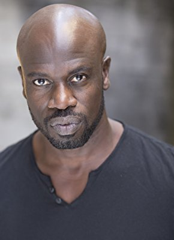

#12144 Cinderella Story: Ein Weihnachtswunsch
Alternativ: A Cinderella Story: Christmas Wish (Englischer Titel)

 IMDB-Wertung: 5.1 / 10
IMDB-Wertung: 5.1 / 10  Metascore: 0
Metascore: 0 
Kat Decker braucht dringend ein Weihnachtswunder! Die großen Träume der aufstrebenden Sängerin werden von ihren Problemen überschattet. Zuhause wird Kat von ihrer eitlen Stiefmutter und den Stiefschwestern herumkommandiert und dazu genötigt, sich als singender Weihnachtself im Santa Land des Milliardärs Terrence Wintergarden zu erniedrigen. Doch einen Hoffnungsschimmer hat ihre Arbeit: Nick, der gutaussehende neue Weihnachtsmann beim Baumverkauf. Als Kat zur prestigeträchtigen Weihnachtsgala der Wintergardens eingeladen wird, setzt ihre Stieffamilie alles daran, sie daran zu hindern und ihre eigenen Einladungen zu erhaschen.
Jahr: 2019
Dauer: 86 Minuten
FSK: 0
Land: USA Studio: NetflixTonspuren: - , - , - , - , - ,
Untertitel: Deutsch, Englisch, Französisch, , ,
Auflösung: 1080p (1920x1080) Größe: 4966 MB
Genre: Musik, Fantasy, Liebe, Weihnachten
Regisseur: Michelle Johnston
Drehbuch: Leigh Dunlap, Michelle Johnston
Soundtrack: Jake Monaco
Darsteller:
- Laura Marano als Kat Decker
 Gregg Sulkin als Dominic Wintergarden
Gregg Sulkin als Dominic Wintergarden- Isabella Gomez als Isla
- Johannah Newmarch als Deirdra Decker
- Lillian Doucet-Roche als Joy Decker
- Chanelle Peloso als Grace Decker
 Barclay Hope als Terrence Wintergarden
Barclay Hope als Terrence Wintergarden-  Garfield Wilson als Mr. Mujiza
- Maddie Phillips als Skyler
 Trezzo Mahoro als Noah
Trezzo Mahoro als Noah- Dejan Loyola als Jackson
- Scott Hislop als Santaland Elf
 Bethany Brown als Stage Manager
Bethany Brown als Stage Manager- Robbie Segulam als Butler
 Kane Nelson als Fantasy Dancer
Kane Nelson als Fantasy Dancer- Dylan Ratzlaff als Fantasy Dancer
- Tessa Tamura als Fantasy Dancer
- Keiran Bohay als Elf Performer
- Zavien Garrett als Elf Performer
- Brittany Good als Elf Performer
- Kallie Hu als Elf Performer
- Jared Khalifa als Elf Performer
- Sage Linder als Elf Performer
- Cassandra Naud als Elf Performer
- Grace Newson als Elf Performer
- Joe Tuliao als Elf Performer
- Zac Vran als Elf Performer
- Courtney Van Wirdum als Elf Performer
- Taz Van Rassel als Scott - PA
- Kiera Klassen als Ashley
- David Olivares als DJ Sock Puppet
- Capone als Bruno
- Justin Lopes als Fantasy Dancer
- Patrick Arnott als Elf Performer
Datei: X:\2019(A-F)\Cinderella Story Ein Weihnachtswunsch (2019, FSK0, 1920x1080).mkv seit 30.12.2019
Festplatte: HD 2018(G-Z)-2019(A-Z)
 Es gibt insgesamt 60 Filme in der Gruppe '2019(A-F)'
Es gibt insgesamt 60 Filme in der Gruppe '2019(A-F)'